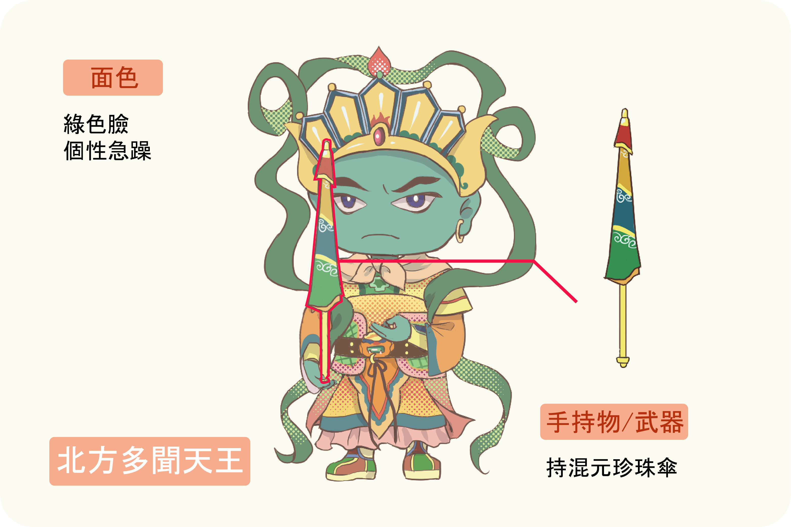
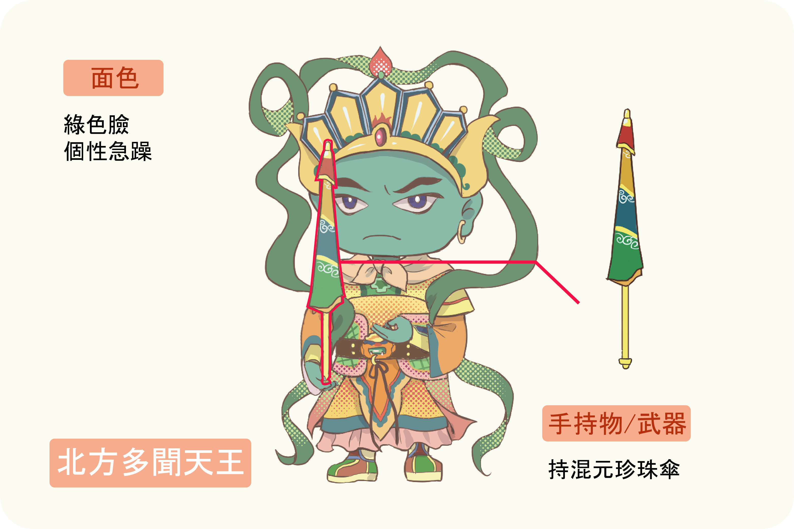
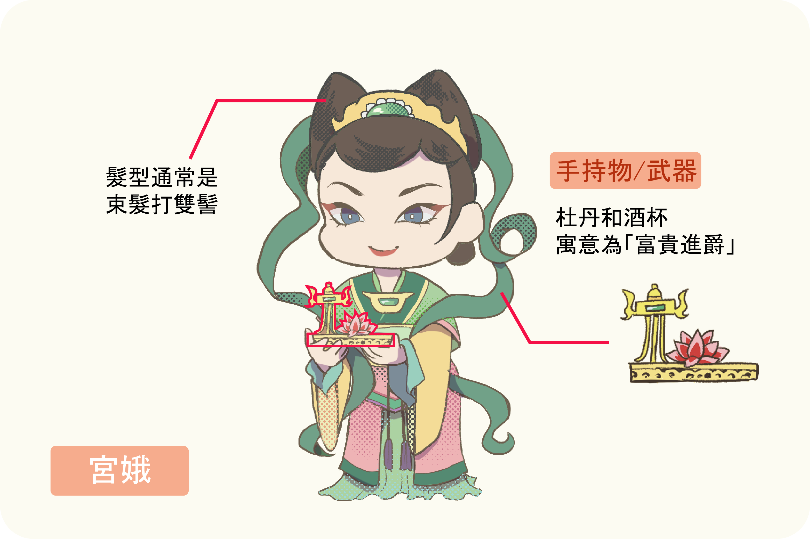
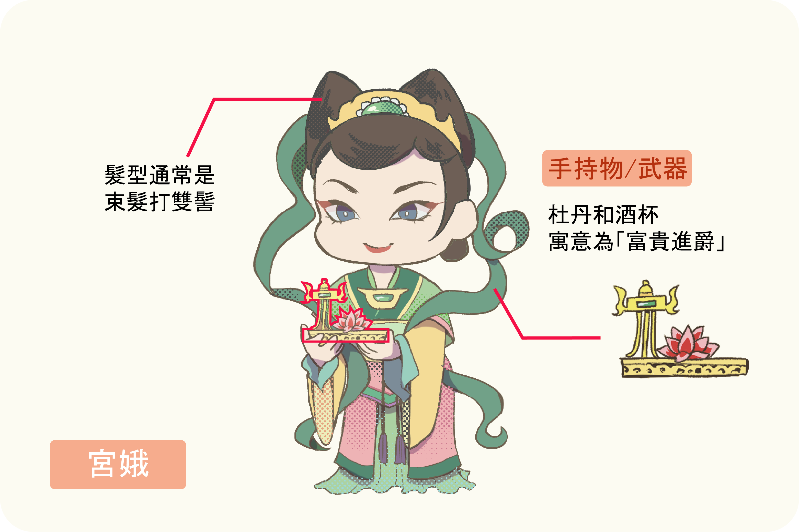

為了加深印象，我們來做個小測驗吧！
四大天王又稱作四大金剛，出自於佛教經典《阿含經》為佛教中守護東南西北四大洲的四大護法神，分別為東方持國天王、南方增長天王、西方廣目天王、北方多聞天王，其寓意近似四大方位之守護神。 道教及民間熟悉的四大天王多半是受《封神演義》的影響，四大天王各屬不同司職，分別掌管風、調、雨、順，寓意為祈求上天風調雨順，保佑五穀豐收、國泰民安。

 

過去在民間被稱作「天官」，被認作是福神，屬於「祈福門神」的一種。
常與壽、祿二仙並列，寓意長壽、發財、官運亨通、子孫滿堂。為了祈求後世子孫吉祥納福，也會繪製在家祠門上。
文官彩繪於邊門，搭配中門的武將門神，普遍的形象為長鬚，頭戴官帽，身穿一品朝服，持象牙笏等象徵吉祥的物品，整體造型華貴。


宮娥大多造型會隨著時代改變流露出各時代對女性的審美。 如果是主祀觀世音或媽祖等女神的寺廟，會常見到太監與宮娥組合，而兩位宮娥與老少太監會一起被分配手持民間喜愛使用的吉祥物品。像是「花、香、燈、果」，或是官帽與爵杯來表示「加官進祿」

 

太監在門神上通常繪有長指甲，頭戴冠，身穿繡有仙鶴、龍等吉祥圖樣的華服。太監門神分為老少兩位，老太監特徵白眉垂目，面部鬆弛，手持拂塵或香爐；年輕太監則是身穿圓領衫或蟒袍，腰束玉帶。


為了加深印象，我們來做個小測驗吧！